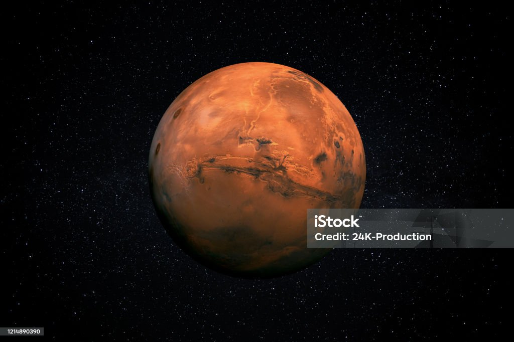

Марс
Марс — четвёртая по удалённости от Солнца планета и седьмая по размеру. Его называют «красной планетой» из-за красноватого оттенка поверхности, который придаёт оксид железа (ржавчина). Марс — один из самых изученных объектов Солнечной системы после Земли.
На Марсе находятся самые высокие горы в Солнечной системе — вулкан Олимп высотой около 21,9 км, и грандиозная система каньонов — Долины Маринер длиной более 4000 км. На планете есть полярные ледяные шапки, состоящие из водяного льда и замёрзшего углекислого газа.
Атмосфера Марса очень разрежена и состоит в основном из углекислого газа (95%). Из-за низкого давления и отсутствия плотной атмосферы на планете бывают сильнейшие пылевые бури, охватывающие всю планету.
Учёные предполагают, что миллиарды лет назад на Марсе могла существовать жидкая вода и, возможно, примитивные формы жизни. Именно поэтому Марс является главным кандидатом для будущей колонизации человечеством.
У Марса есть два небольших спутника — Фобос и Деймос, которые, как считают, являются захваченными астероидами.